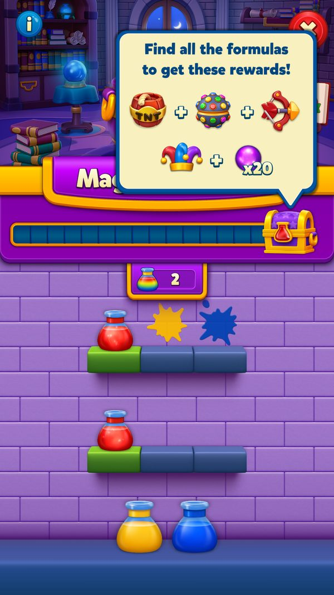

Nồi Phù Thủy (Magic Cauldron)
Sự kiện giải mã công thức thuốc kiểu Mastermind: dùng elixir nhặt trong level để đoán đúng hàng lọ màu qua 12 stage.
Mô tả
- Nồi Phù Thủy là sự kiện giải đố kiểu Mastermind: người chơi phải đoán ra công thức thuốc, tức một hàng gồm 3 đến 6 lọ elixir đúng màu và đúng vị trí.
- Elixir là vật phẩm thu thập nhặt được khi thắng level có collectable Magic Cauldron; mỗi lần đặt một lọ vào khay tốn đúng 1 elixir.
- Khi khay đầy, hệ thống chấm từng vị trí: ô đúng màu đúng chỗ hiện màu xanh, ô sai giữ nguyên để người chơi suy luận cho lượt sau.
- Đoán đúng cả hàng thì hoàn thành stage, nhận thưởng và bước sang công thức dài hơn; sự kiện có 12 stage với độ dài 3-3-3-4-4-4-5-5-5-6-6-6.
- Toàn bộ lịch sử đoán được lưu lại (tối đa 50 hàng gần nhất) và hiển thị trên kệ để người chơi dò ra đáp án.
- Điểm đặc biệt: đáp án không cố định — nếu người chơi liên tục đoán trật hoàn toàn, hệ thống viết lại công thức sao cho vẫn nhất quán với mọi phản hồi đã đưa ra nhưng đảm bảo có ít nhất một ô đúng.
- Hết 12 stage, người chơi nhận thưởng hoàn thành lớn và elixir còn dư được đổi thành thưởng bổ sung (hoặc chuyển sang sự kiện kế tiếp).
- Khi hết giờ mà vẫn còn dở dang, sự kiện chuyển sang phiên cuối và mời mua gói elixir phút chót trước khi đóng.
- Icon ở Home hiển thị số elixir, stage hiện tại và đếm ngược; có chấm đỏ nhắc khi đã đủ elixir để thực hiện lượt đoán tiếp theo.
Lưu ý
Tình trạng ảnh đã rà soát
Có ảnh màn hình
Gallery có ảnh game đã kiểm tra; số ảnh không biểu thị mọi trạng thái hoặc use case đã được chụp.
Rà soát ngày 08/10/2026. Xem bảng kiểm kê toàn wiki.
Ảnh chụp màn hình (1)
Chụp trực tiếp từ game đang chạy: 2026-10-06 · LDPlayer 9 · Android 9 · 1080×1920 · Royal Match v38174 · tài khoản test 2712389101 (tên sdasfdfsdf), level 11. Bấm ảnh để phóng to, dùng phím ← → để chuyển ảnh.


Mở khóa & điểm vào
MagicCauldronManager.UnlockLevel = 39 (const); get_HasEnoughLevel kiểm tra level. get_ShouldShowIcon = IsSameEventWithServer && RemainingTimeInMs > 0. IsAllBundlesDownloaded và GetBundleAvailableLevel() điều khiển tải bundle. CanShowEventIconLocked cho phép hiện icon khoá sớm. Event dừng khi IsDisabledByBackend.
Điểm vào:
- Icon Magic Cauldron ở Home (MagicCauldronIcon với IconState riêng)
- Dialog nấu thuốc — TryPushMagicCauldronDialog(isUserAction, shouldBlockHomeSection)
- Start dialog tự động (TryAddStartDialog) và finish dialog (TryPushFinishDialog)
- Deeplink 'magiccauldron'
- Offer 'MagicCauldronOffer' (DynamicOfferManager) bán elixir, xuất hiện ở quit popup
- Task 'Find Formula' trong Mission events (MagicCauldronFindFormulaTask)
Cách hoạt động
- Người chơi đạt Level 39 và tải xong bundle; icon Nồi Phù Thủy xuất hiện ở Home khi client và server cùng một event và còn thời gian (UnlockLevel = 39, get_ShouldShowIcon).
- Client nạp config: server config và user config từ gói refresh, fallback về asset 'magic_cauldron_default_config'; nếu thiếu user config thì gọi HTTP GetMagicCauldronInfo (FillFromLocal, UpdateServerConfig, UpdateUserEventInfo).
- Khi đủ điều kiện tham gia, hệ thống vào event: stage bắt đầu = 1, độ dài hàng = stageRowSizes[0] = 3, sinh công thức đúng ngẫu nhiên; lần đầu chơi có tutorial với đáp án bị ép để chắc chắn đúng (TryEnterEvent, CreateNewExpectedRow, ChangeExpectedRowForTutorial).
- Người chơi vào level có collectable Magic Cauldron; thắng level cộng elixir theo số collectable nhặt được, kẹp trần 8000, có thể nhân thêm nếu bật multiplier (WonLevel, GetCollectableCountWithMultiplier).
- Khi số elixir đủ lấp hết ô trống của hàng hiện tại, icon bật chấm đỏ nhắc quay lại đoán (GetUnfilledCount, SetShouldShowIconNotificationForEnoughPieces).
- Trong dialog, mỗi lần bấm một màu là đặt 1 lọ vào ô trống kế tiếp và tiêu 1 elixir; hệ thống trả ElixirSuccess (2), hoặc chặn bằng NoElixir (0) / NoEmptySlot (1) / ElixirInvalid (3) (TryPlaceElixir, PlaceElixir).
- Khi hàng đầy, nếu trùng một lượt đã đoán thì trả lại toàn bộ lọ (RowDuplicate = 4); nếu khớp đáp án thì RowSuccess (5); nếu sai thì RowFail (6) hoặc RowFailChange (7) (IsGuessAlreadyMade).
- Hàng sai bị đẩy vào lịch sử (tối đa 50 hàng, bit 87..1136), các ô đúng vị trí được đánh dấu xanh để làm manh mối (MagicCauldronSlotData.isGreen).
- Nếu lượt sai không có ô nào đúng: tăng bộ đếm trật liên tiếp (chỉ khi bộ đếm chưa bằng 2 và hàng ngắn hơn 6 ô); khi bộ đếm đã bằng 2 hoặc hàng dài từ 6 ô trở lên, hệ thống đổi đáp án để lượt này có ít nhất một ô đúng (ChangeExpectedRowIfNecessary, CreateNewExpectedRowFromPreviousMistakes).
- Đoán đúng cả hàng: gửi analytics MagicCauldronFinish, tăng stage, cộng tiến độ nhiệm vụ (mission id 3), xoá lịch sử đoán, sinh công thức mới theo stageRowSizes và lưu đồng bộ (ProceedNextStage, SaveAndSyncData).
- Thưởng của stage vừa xong được trao ngay với nguồn 'MC-{stage}' — mỗi stage đúng 1 RewardItem (CompleteStage, ClaimReward, GetRewardForStage).
- Bối cảnh nồi đổi khi sceneIndexesForStage tăng, tức tại các mốc stage 4, 7 và 10 ([1,1,1,2,2,2,4,4,4,5,5,5], IsProceedingToNextStep).
- Hoàn thành stage thứ 12 (bộ đếm stage tăng thành GetStageCount() + 1): nhận thưởng hoàn thành 1 PL, 1 IG với nguồn 'MC-1001', rồi nếu vẫn còn elixir thì quy đổi với hệ số min(elixirCount / 50 + 1, 3) nhân vào 1 H, nguồn 'MC-RemainingElixir' (ClaimEventCompleteRewards, ClaimElixirRewards).
- Nếu hết giờ trước khi xong: sự kiện vào phiên cuối, mở offer 'MagicCauldronOffer' bán elixir gấp, sau đó gửi MagicCauldronFinish với step = -1 và đóng lại (ProceedToLastSession, SendFinishAnalyticsForTimeExpire).
- Elixir còn lại ưu tiên chuyển sang sự kiện thu thập kế tiếp; nếu không chuyển được mới đổi thành thưởng, và cuối cùng tiến độ được đánh dấu hoàn tất (CanConvertCollectablesToNextEvent, CompleteEvent, OnMagicCauldronCompletion).
Luồng chi tiết theo code
FillFromLocal() nạp server config và user config (log 'LoadServerConfig V:{0}', 'LoadUserConfig V:{0}', fallback TextAsset 'magic_cauldron_default_config' với log 'LoadDefaultConfig for ServerConfig/UserConfig'). Server gửi MagicCauldronInfo → UpdateInfo(info) lưu ServerEventId, ServerEventEndDate, ServerEventPriority và gọi UpdateServerConfig (log 'UpdateServerConfig:{0} - Version:{1}'). TryEnterEvent() khi CanJoinEvent && HasEnoughTimeToJoinEvent, log 'Entered Event - ServerEventId: {0}'; MagicCauldronProgress bắt đầu ở StartStage = 1, rowSize = stageRowSizes[0] = 3, ExpectedRow được sinh bằng MagicCauldronShelfHelper.CreateNewExpectedRow(rowSize). Trong level: EnteredLevel() bật MagicCauldronLevelData.shouldCollectElixirFromLevel; WonLevel(collectableCount) cộng elixir với trần MaxElixirCount = 8000 (Math.Min), đặt SetProgressedInEvent và nếu số elixir đủ lấp hết ô trống (MagicCauldronRow.GetUnfilledCount) thì bật SetShouldShowIconNotificationForEnoughPieces(true). Trên dialog: mỗi lần bấm một lọ màu, MagicCauldronShelfHelper.TryPlaceElixir(color, emptySlotIdx, isShowingTutorial) trả ElixirStatus — NoElixir(0) khi hết elixir, NoEmptySlot(1), ElixirInvalid(3) khi màu đó đã được chứng minh sai ở vị trí đó (IsElixirWrongAndPlacedBefore), RowDuplicate(4) khi hàng trùng lượt đoán cũ (IsGuessAlreadyMade → trả toàn bộ lọ về), ElixirSuccess(2) khi đặt được, RowSuccess(5) khi hàng đúng hết, RowFail(6) / RowFailChange(7) khi sai. MagicCauldronProgress.PlaceElixir tiêu 1 elixir. Khi hàng đầy và đúng → ShelfHelper.ProceedNextStage(): SendFinishAnalyticForStageComplete (MagicCauldronFinish), IncreaseStage, MissionEventsCommonTaskHelper.SetMissionProgressAmount(3, 1), tạo ExpectedRow mới với rowSize của stage kế, ghi vào BitArray (CurrentRow bit 45..65, ExpectedRow bit 66..86, PreviousRows bit 87..1136 tối đa MaxPreviousRowCount = 50 hàng) rồi SaveAndSyncData. MagicCauldronManager.CompleteStage(out packRewardPanelData, expectedRowOfStage) gọi ClaimReward (source 'MC-{stage}'); nếu stage == GetStageCount() + 1 thì ClaimEventCompleteRewards (source 'MC-1001') và ClaimElixirRewards (source 'MC-RemainingElixir'), MagicCauldronProgress.CompleteEvent, UserStatsHelper.OnMagicCauldronCompletion. Khi sai và chưa có ô đúng nào: nếu ConsecutiveWrongFirstStepCount != 2 và rowSize < 6 thì tăng bộ đếm, ngược lại ChangeExpectedRowAccordingToCurrentRow đổi đáp án để người chơi có ít nhất một ô đúng.
Phần thưởng
PHẦN THƯỞNG THEO STAGE (MẶC ĐỊNH)
| Stage | Điều kiện | Phần thưởng |
|---|---|---|
| Stage 1 | Đoán đúng công thức 3 ô |  1Rocket 1Rocket |
| Stage 2 | Đoán đúng công thức 3 ô |  1TNT 1TNT |
| Stage 3 | Đoán đúng công thức 3 ô |  1Royal Hammer 1Royal Hammer |
| Stage 4 | Đoán đúng công thức 4 ô |  1Light Ball 1Light Ball |
| Stage 5 | Đoán đúng công thức 4 ô | ∞15 phútUnlimited Rocket |
| Stage 6 | Đoán đúng công thức 4 ô |  1Cannon 1Cannon |
| Stage 7 | Đoán đúng công thức 5 ô | ∞15 phútUnlimited TNT |
| Stage 8 | Đoán đúng công thức 5 ô |  500Coin 500Coin |
| Stage 9 | Đoán đúng công thức 5 ô | |
| Stage 10 | Đoán đúng công thức 6 ô |  1Jester Hat 1Jester Hat |
| Stage 11 | Đoán đúng công thức 6 ô | ∞15 phútUnlimited Light Ball |
| Stage 12 | Đoán đúng công thức 6 ô (stage cuối) | 1000Coin |
PHẦN THƯỞNG HOÀN THÀNH EVENT
| Mốc | Điều kiện | Phần thưởng |
|---|---|---|
| Rương hoàn thành | Hoàn thành đủ 12 stage (nguồn 'MC-1001') | 1Prelevel boosters 1All in-game boosters |
QUY ĐỔI ELIXIR DƯ (MC-RemainingElixir)
| Bậc | Điều kiện (elixir còn lại) | Phần thưởng |
|---|---|---|
| Bậc 1 (×1) | 1 – 49 elixir dư | 1Royal Hammer |
| Bậc 2 (×2) | 50 – 99 elixir dư | 2Royal Hammer |
| Bậc 3 (×3, tối đa) | ≥ 100 elixir dư | 3Royal Hammer |
| Ưu tiên trước quy đổi | Nếu có sự kiện thu thập kế tiếp | Chuyển toàn bộ elixir sang event sau (không quy đổi) |
CẤU TRÚC CÔNG THỨC & BỐI CẢNH THEO STAGE
| Stage | Số ô công thức (stageRowSizes) | Scene (sceneIndexesForStage) |
|---|---|---|
| Stage 1 | 3 ô | Scene 1 |
| Stage 2 | 3 ô | Scene 1 |
| Stage 3 | 3 ô | Scene 1 |
| Stage 4 | 4 ô | Scene 2 (đổi bối cảnh) |
| Stage 5 | 4 ô | Scene 2 |
| Stage 6 | 4 ô | Scene 2 |
| Stage 7 | 5 ô | Scene 4 (đổi bối cảnh) |
| Stage 8 | 5 ô | Scene 4 |
| Stage 9 | 5 ô | Scene 4 |
| Stage 10 | 6 ô | Scene 5 (đổi bối cảnh) |
| Stage 11 | 6 ô | Scene 5 |
| Stage 12 | 6 ô | Scene 5 |
NGUỒN ELIXIR (COLLECTABLE)
| Nguồn | Điều kiện | Phần thưởng |
|---|---|---|
| Thắng level | Level có collectable Magic Cauldron | Elixir theo số collectable nhặt được (server / level design) |
| Multiplier trước level | Bật tag nhân collectable | Elixir × hệ số multiplier (server) |
| Offer 'MagicCauldronOffer' | Mua gói ở quit popup khi hết elixir | Elixir theo gói (server) |
| System message | Nhận tin nhắn hệ thống chứa RewardType.Elixir = 29 | Elixir theo rewardCount (server) |
| Chuyển từ event trước | RemainingCollectablesConversion | Elixir dư của sự kiện thu thập trước (server) |
Phần thưởng theo code
| Ngữ cảnh | Phần thưởng | Evidence |
|---|---|---|
| Stage 1..12 (mặc định) | 1Rocket 1TNT 1Royal Hammer 1Light Ball ∞15 phútUnlimited Rocket 1Cannon ∞15 phútUnlimited TNT 500Coin 1Jester Hat ∞15 phútUnlimited Light Ball 1000Coin | magic_cauldron_default_config.json stageRewards; MagicCauldronManager.ClaimReward |
| Hoàn thành toàn bộ event | 1 Prelevel booster 1 In-game booster (source 'MC-1001') | magic_cauldron_default_config.json eventCompleteRewards; MagicCauldronManager.ClaimEventCompleteRewards |
| Quy đổi elixir dư | 1 Hammer × min(elixirCount / 50 1 3) — tối đa 3 Hammer (source 'MC-RemainingElixir') | MagicCauldronManager.ClaimElixirRewards; magic_cauldron_default_config.json elixirReward/elixirRewardCount |
| Nguồn thưởng stage | 'MC-{stage}' | MagicCauldronManager.ClaimReward |
Số liệu chính
| Chỉ số | Giá trị | Nguồn |
|---|---|---|
| Mở khóa | Level 39 | MagicCauldronManager.UnlockLevel |
| Số stage | 12 | magic_cauldron_default_config.json stageRowSizes |
| Độ dài công thức theo stage | 3-3-3-4-4-4-5-5-5-6-6-6 | stageRowSizes |
| Số màu elixir | 7 (Color1..Color7) | ElixirColor |
| Trần elixir | 8000 | MagicCauldronManager.MaxElixirCount |
| Chi phí mỗi lọ đặt vào khay | 1 elixir | MagicCauldronProgress.PlaceElixir |
| Số lượt đoán cũ lưu lại | 50 hàng | MagicCauldronProgress.MaxPreviousRowCount |
| Giới hạn độ dài kệ (UI) | 3 – 7 ô | MagicCauldronManager.MinimumShelfLength / MaximumShelfLenght |
| Số lần trật liên tiếp trước khi đổi đáp án | 2 (với hàng < 6 ô; hàng từ 6 ô trở lên đổi ngay) | MagicCauldronProgress.ConsecutiveWrongFirstStepCount (bit 32..33) |
| Elixir dư cho mỗi bậc quy đổi | 50 | magic_cauldron_default_config.json elixirRewardCount |
| Hệ số quy đổi elixir dư tối đa | ×3 | MagicCauldronManager.MaxRewardCount |
| Thưởng cơ sở quy đổi elixir | 1 H | magic_cauldron_default_config.json elixirReward |
| Thưởng hoàn thành event | 1 PL, 1 IG | magic_cauldron_default_config.json eventCompleteRewards |
| Thưởng stage 8 | 500 C | stageRewards[7] |
| Thưởng stage 12 | 1000 C | stageRewards[11] |
| Thưởng unlimited booster (stage 5/7/11) | 15 phút mỗi loại (15 UR, 15 UT, 15 ULB) | stageRewards[4], stageRewards[6], stageRewards[10] |
| Stage bắt đầu | 1 | MagicCauldronProgress.StartStage |
| Độ dài BitArray tiến độ | 1137 bit | MagicCauldronProgress.BitArrayLength |
| Bit mỗi ô elixir | 3 bit | MagicCauldronProgress bitfield (CurrentRow 45..65) |
| Số lần vào event được đếm để rút ngắn animation | tối đa 7 (3 bit) | MagicCauldronProgress.EnteredEventCountForFastAnimations (bit 36..38) |
| Mã sự kiện | EventType.MagicCauldron = 4 | MagicCauldronManager.GetEventType |
| Mã step analytics khi hết giờ / bỏ ở quit popup | -1 / -2 | FinishAnalyticsTimeExpire / FinishAnalyticsQuitPopup |
| Id nhiệm vụ Mission Events cập nhật khi qua stage | 3 (+1) | MagicCauldronShelfHelper.ProceedNextStage → SetMissionProgressAmount(3, 1) |
| Mã loại thưởng Elixir | RewardType.Elixir = 29 ('Ex') | RewardType.cs |
| Thời lượng sự kiện | Do server quy định (RemainingTime) (server) | MagicCauldronManager.UpdateInfo / ServerEventEndDate |
Ghi chú thiết kế
- Đoán trật hoàn toàn không hẳn là xấu: với hàng ngắn hơn 6 ô, sau 2 lượt trật liên tiếp hệ thống sẽ viết lại đáp án để bạn có ít nhất một ô xanh; với hàng từ 6 ô trở lên thì đổi ngay ở lượt trật đầu tiên, nên đừng sợ thử màu mới.
- Chọn lại một màu đã bị chứng minh sai ở đúng vị trí đó sẽ bị chặn mà không tốn elixir — có thể dùng để dò nhanh xem vị trí nào đã loại trừ.
- Ghép trùng một hàng đã đoán cũng không mất elixir vì toàn bộ lọ được trả về, nên hãy đối chiếu lịch sử 50 lượt trước khi xác nhận.
- Nên tiêu hết elixir trước khi sự kiện kết thúc: quy đổi elixir dư bị chặn ở ×3 (tối đa 3 H) dù bạn còn bao nhiêu.
- Bật multiplier trước level là cách nhanh nhất để gom đủ elixir cho các stage 6 ô, vốn cần ít nhất 6 elixir cho mỗi lượt đoán.
Use case (22)
Bấm vào từng use case để mở. Mở/đóng tất cả
UC-01 Mở khóa & hiện icon
Các bước- get_HasEnoughLevel; IsAllBundlesDownloaded()
- get_ShouldShowIcon() = IsSameEventWithServer && RemainingTimeInMs > 0
- get_IsIconActive(); UpdateIconImmediately(); get_ShowIconNotification()
- get_ShouldShowEnoughElixirNotification() bật chấm đỏ khi đủ elixir để đoán tiếp
| Actor | System |
|---|---|
| Trigger | Vào Home khi đủ level và server có event |
| Điều kiện | Level ≥ 39, bundle đã tải |
| Kết quả | Icon nồi phù thuỷ hiện ở Home với số elixir và đếm ngược |
| Quy tắc / số liệu | UnlockLevel = 39; GetBundleAvailableLevel() quyết định level bắt đầu tải bundle. |
| Evidence | MagicCauldronManager.get_HasEnoughLevel; MagicCauldronManager.get_ShouldShowIcon; MagicCauldronManager.get_IsIconActive; MagicCauldronManager.get_ShouldShowEnoughElixirNotification; MagicCauldronManager.GetUnlockLevel |
UC-02 Nhận thông tin event & config từ server
Các bước- UpdateInfo(MagicCauldronInfo): lưu ServerEventId, ServerEventEndDate = now + RemainingTime, ServerEventPriority
- UpdateServerConfig(newConfigVersion, newConfig) log 'UpdateServerConfig:{0} - Version:{1}'
- TryUpdateUserConfigWithRefreshInfo(MagicCauldronUserConfigInfo?) → UpdateUserConfig log 'UpdateUserConfig:{0} - Version:{1}'; nếu user event hết hạn → log 'User event with id:{0} has expired! Completing event!' và ProceedToLastSession()
- ValidateUserConfig() kiểm tra user config còn khớp
| Actor | Server |
|---|---|
| Trigger | Gói refresh chứa MagicCauldronInfo |
| Điều kiện | ShouldUpdateInfo() && !IsDisabledByBackend |
| Kết quả | Client biết event, thời hạn, độ ưu tiên và bảng công thức/thưởng |
| Quy tắc / số liệu | ServerEventPriority (byte) tham gia xếp hạng icon trong EventDependencyManager. |
| Evidence | MagicCauldronManager.UpdateInfo; MagicCauldronManager.ShouldUpdateInfo; MagicCauldronManager.UpdateServerConfig; MagicCauldronManager.TryUpdateUserConfigWithRefreshInfo; MagicCauldronManager.ValidateUserConfig |
UC-03 Lấy user config riêng qua HTTP
Các bước- Gửi GetMagicCauldronInfo (Command/MagicCauldron); UpdateUserEventInfo(requestedEventId, GetMagicCauldronInfoResponse)
- Nếu event id lệch → log 'Info for different event received:{0} CurrentEvent:{1}'
- Nếu response rỗng → log '{0} invalidated because info doesn''t have value!:{1}' (với {0} = 'MC') và ProceedToLastSession()
- Nếu hợp lệ → log '{0} UserEventInfoReceived - UEId:{1} CV:{2}' và UpdateUserConfig
| Actor | Client |
|---|---|
| Trigger | Vào event mới hoặc version lệch |
| Điều kiện | - |
| Kết quả | Người chơi có công thức và bảng thưởng cá nhân hoá |
| Quy tắc / số liệu | UserConfigVersion lưu trong MagicCauldronData; 'Reset MagicCauldron UserConfigVersion' khi reset. |
| Evidence | MagicCauldronManager.UpdateUserEventInfo; MagicCauldronManager.UpdateUserConfig; MagicCauldronManager.UpdateProgress; MagicCauldronManager.get_UserConfigVersion |
UC-04 Vào event mới
Các bước- TryEnterEvent() log 'Entered Event - ServerEventId: {0}'
- MagicCauldronProgress bắt đầu StartStage = 1, CurrentRowSize = stageRowSizes[0]
- MagicCauldronShelfHelper.CreateNewExpectedRow(rowSize) sinh công thức đúng ngẫu nhiên
- RemainingCollectablesConversionManager chuyển collectable dư của event cùng nhóm
- ResetIconNotificationEventId() log 'Update IconNotificationEventId : {0} '
| Actor | System |
|---|---|
| Trigger | Có event mới, đủ điều kiện |
| Điều kiện | CanJoinEvent (ShouldShowIcon) && HasEnoughTimeToJoinEvent |
| Kết quả | Người chơi bắt đầu stage 1 với công thức 3 lọ |
| Quy tắc / số liệu | StartStage = 1; MinimumShelfLength = 3, MaximumShelfLenght = 7 (giới hạn UI). |
| Evidence | MagicCauldronManager.TryEnterEvent; MagicCauldronManager.get_CanJoinEvent; MagicCauldronShelfHelper.CreateNewExpectedRow; MagicCauldronProgress.StartStage; MagicCauldronManager.ResetIconNotificationEventId |
UC-05 Thắng level: nhận elixir
Các bước- WonLevel(collectableCount): SetProgressedInEvent, ElixirCount = Math.Min(ElixirCount + collectableCount, 8000)
- Nếu MagicCauldronRow.GetUnfilledCount() ≤ elixir mới → MagicCauldronData.SetShouldShowIconNotificationForEnoughPieces(true)
- MissionEventsCommonTaskHelper cập nhật task liên quan
- set_ShouldCollectElixirFromLevel(true) để chạy animation elixir bay vào icon ở Home
| Actor | Player |
|---|---|
| Trigger | Thắng level có collectable Magic Cauldron |
| Điều kiện | get_ShouldIncreaseElixirCount / get_CanIncreaseElixirCount |
| Kết quả | Số elixir tăng, icon báo khi đủ để đoán tiếp |
| Quy tắc / số liệu | MaxElixirCount = 8000 (bit 17..26 phần thấp + bit 41..44 phần cao, ElixirCountLowBitCount = 10). |
| Evidence | MagicCauldronManager.WonLevel; MagicCauldronManager.get_ShouldIncreaseElixirCount; MagicCauldronManager.get_CanIncreaseElixirCount; MagicCauldronManager.set_ShouldCollectElixirFromLevel; MagicCauldronProgress.SetElixirCount |
UC-06 Đặt một lọ elixir vào khay
Các bước- MagicCauldronShelfHelper.TryPlaceElixir(elixirColor, emptySlotIdx, isShowingTutorial)
- Nếu hết elixir hoặc emptySlotIdx == -1 → ElixirStatus.NoElixir (0) / NoEmptySlot (1)
- IsElixirWrongAndPlacedBefore(elixir, idx): màu đã được chứng minh sai ở đúng vị trí đó → ElixirInvalid (3), không tốn elixir
- MagicCauldronProgress.PlaceElixir(color, idx) tiêu 1 elixir và ghi CurrentRow (bit 45..65, 3 bit/ô)
- Nếu hàng chưa đầy → ElixirSuccess (2)
- TryTakeBackElixir(index) / TakeAllElixirBack() cho phép lấy lại lọ đã đặt
| Actor | Player |
|---|---|
| Trigger | Bấm chọn màu elixir trong dialog |
| Điều kiện | get_HasElixir (ElixirCount > 0) && có ô trống |
| Kết quả | Lọ được đặt vào khay, elixir giảm 1 |
| Quy tắc / số liệu | ElixirColor: NoColor = 0, Color1..Color7 = 1..7 (3 bit/ô). HasEnoughElixirsForNextGuess() = số ô trống ≤ ElixirCount. |
| Evidence | MagicCauldronShelfHelper.TryPlaceElixir; MagicCauldronShelfHelper.TryTakeBackElixir; MagicCauldronShelfHelper.TakeAllElixirBack; MagicCauldronShelfHelper.HasEnoughElixirsForNextGuess; MagicCauldronProgress.PlaceElixir |
UC-07 Đoán trúng công thức (RowSuccess) và lên stage
Các bước- TryPlaceElixir trả ElixirStatus.RowSuccess (5)
- MagicCauldronShelfHelper.ProceedNextStage(): SendFinishAnalyticForStageComplete → MagicCauldronFinish(eventId, seed, step, elixirCount, elixirUsed, tryCount)
- MagicCauldronProgress.IncreaseStage; MissionEventsCommonTaskHelper.SetMissionProgressAmount(3, 1, false, false)
- CreateNewExpectedRow(GetRowSizeForStage(stage mới)) và ghi vào BitArray; xoá PreviousRows
- MagicCauldronManager.CompleteStage(out packRewardPanelData, expectedRowOfStage) → ClaimReward
- MagicCauldronProgress.SaveAndSyncData
| Actor | Player |
|---|---|
| Trigger | Hàng đầy và khớp ExpectedRow |
| Điều kiện | MagicCauldronRow.IsAllFilled() |
| Kết quả | Nồi sôi, nhận thưởng stage, công thức mới dài hơn (theo stageRowSizes) |
| Quy tắc / số liệu | IsProceedingToNextStep(stage) so sánh sceneIndexesForStage[stage−1] < sceneIndexesForStage[stage] để biết có đổi bối cảnh không. |
| Evidence | MagicCauldronShelfHelper.ProceedNextStage; MagicCauldronManager.CompleteStage; MagicCauldronManager.IsProceedingToNextStep; MagicCauldronManager.GetRowSizeForStage; MagicCauldronManager.SendFinishAnalyticForStageComplete |
UC-08 Đoán sai và hệ thống điều chỉnh đáp án
Các bước- HasCorrectElixirInCurrentRow() / HasCorrectElixirInPreviousAndCurrent() kiểm tra có ô nào đúng không
- Nếu không có ô đúng và ConsecutiveWrongFirstStepCount != 2 và CurrentRowSize < 6 → tăng ConsecutiveWrongFirstStepCount (bit 32..33)
- Ngược lại ChangeExpectedRowAccordingToCurrentRow() đổi đáp án sao cho lượt đoán này có ít nhất một ô đúng → ElixirStatus.RowFailChange (7)
- CreateNewExpectedRowFromPreviousMistakes(previousRow, currentRow) tính lại đáp án tương thích với mọi thông tin đã lộ (GetSmallestListIndex chọn vị trí ít lựa chọn nhất)
- Hàng bị đẩy vào PreviousRows (bit 87..1136, tối đa MaxPreviousRowCount = 50), ô đúng đánh dấu isGreen trong MagicCauldronSlotData
- Nếu hàng trùng một lượt đã đoán → IsGuessAlreadyMade → trả toàn bộ lọ về (RowDuplicate = 4), không mất elixir
| Actor | System |
|---|---|
| Trigger | Hàng đầy nhưng không khớp |
| Điều kiện | - |
| Kết quả | Người chơi thấy ô đúng (xanh) và ô sai; hệ thống đảm bảo không kẹt vô hạn |
| Quy tắc / số liệu | Đây là cơ chế chống ức chế (anti-frustration): đáp án không cố định mà được viết lại sao cho vẫn nhất quán với mọi phản hồi đã đưa ra. ConsecutiveWrongFirstStepCount tối đa 2 (2 bit). |
| Evidence | MagicCauldronShelfHelper.ChangeExpectedRowIfNecessary; MagicCauldronShelfHelper.ChangeExpectedRowAccordingToCurrentRow; MagicCauldronShelfHelper.CreateNewExpectedRowFromPreviousMistakes; MagicCauldronShelfHelper.HasCorrectElixirInCurrentRow; MagicCauldronShelfHelper.IsGuessAlreadyMade; MagicCauldronProgress.ConsecutiveWrongFirstStepCountStart |
UC-09 Nhận thưởng stage
Các bước- ClaimReward(out packRewardPanelData, claimedRowAsInteger): MagicCauldronUiHelper.GetRewardForStage(stage − 1)
- InventoryPackage.GetInventoryPackageFromRewardItem + UserManager.AddInventoryPackage; coin cộng qua CoinInfoView.ManuallyAddCoinToView
- UserManager.AddSeasonalCardCollectionPackage với source 'MC-{stage}'
- SendClaimAnalytics(claimStage, claimedRowAsInteger, package) → MagicCauldronClaim(eventId, seed, step, package)
- Log 'GiveRewards EventId: {0} Stage: {1}'
| Actor | Player |
|---|---|
| Trigger | Hoàn thành một stage |
| Điều kiện | - |
| Kết quả | Nhận đúng 1 phần thưởng của stage (booster hoặc coin) |
| Quy tắc / số liệu | Mỗi stage chỉ có 1 RewardItem (stageRewards là mảng RewardItem, không phải mảng gói). |
| Evidence | MagicCauldronManager.ClaimReward; MagicCauldronManager.SendClaimAnalytics; MagicCauldronUiHelper.GetRewardForStage; MagicCauldronManager.GetAllRewards |
UC-10 Hoàn thành toàn bộ event
Các bước- CompleteStage(): phát hiện stage vượt tổng số stage
- ClaimEventCompleteRewards(expectedRowOfStage): MagicCauldronUiHelper.GetEventCompleteRewards() (mặc định 1 PL + 1 IG), source 'MC-1001'
- ClaimElixirRewards(expectedRowOfStage): nếu còn elixir, thử RemainingCollectablesConversionManager.TrySetShouldConvertCollectable trước; nếu không chuyển được thì đổi elixir thành thưởng — hệ số = Math.Min(elixirCount / elixirRewardCount + 1, MaxRewardCount = 3), nhân vào elixirReward.a; source 'MC-RemainingElixir'
- MagicCauldronProgress.ConsumeElixirs; MagicCauldronElixirRewardAnimData(elixirCount, rewardItem) cho animation
- MagicCauldronProgress.CompleteEvent; UserStatsHelper.OnMagicCauldronCompletion; IsDisabledByBackend = true (khoá tiếp tục)
- TryGetElixirRewards(out elixirRewardAnimData) và OnElixirRewardAnimationCompleted() mở khoá touch
| Actor | Player |
|---|---|
| Trigger | Hoàn thành stage cuối (stage == GetStageCount() + 1) |
| Điều kiện | - |
| Kết quả | Nhận thưởng hoàn thành + thưởng quy đổi elixir dư (tối đa ×3) |
| Quy tắc / số liệu | elixirRewardCount = 50 (mặc định): mỗi 50 elixir dư tăng 1 bậc, tối đa 3 lần elixirReward (mặc định 1 Hammer). |
| Evidence | MagicCauldronManager.CompleteStage; MagicCauldronManager.ClaimEventCompleteRewards; MagicCauldronManager.ClaimElixirRewards; MagicCauldronManager.TryGetElixirRewards; MagicCauldronManager.OnElixirRewardAnimationCompleted; MagicCauldronManager.GetEventEndChestRewards |
UC-11 Hết giờ event (last chance / last session)
Các bước- get_IsLastChance() cảnh báo khi sắp hết giờ; get_IsProgressEventTimeFinished() khi đã hết
- ProceedToLastSession(): mở offer 'MagicCauldronOffer' qua DynamicOfferManager.GetIcon để mua elixir gấp
- CompleteLastSession() kết thúc phiên
- SendFinishAnalyticsForTimeExpire() gửi MagicCauldronFinish với step = FinishAnalyticsTimeExpire = -1
- OnApplicationPause() và OnHomeContextActivated() cũng gọi ProceedToLastSession khi phát hiện hết giờ
- TryPushFinishDialog(isUserAction) hiển thị kết quả
| Actor | System |
|---|---|
| Trigger | RemainingTimeInMs sắp/đã hết |
| Điều kiện | - |
| Kết quả | Người chơi được mời mua elixir phút cuối, sau đó event đóng |
| Quy tắc / số liệu | FinishAnalyticsTimeExpire = -1, FinishAnalyticsQuitPopup = -2 là mã step đặc biệt cho analytics. |
| Evidence | MagicCauldronManager.get_IsLastChance; MagicCauldronManager.ProceedToLastSession; MagicCauldronManager.CompleteLastSession; MagicCauldronManager.SendFinishAnalyticsForTimeExpire; MagicCauldronManager.OnApplicationPause; MagicCauldronManager.TryPushFinishDialog |
UC-12 Mua offer elixir (quit popup)
Các bước- IsOfferPurchasedFromQuitPopup đánh dấu mua từ popup thoát
- EventOfferPurchased(elixirCount): ElixirCount = Math.Min(ElixirCount + elixirCount, 8000), SetProgressedInEvent, log '{0} Elixirs added from MC Offer!'
- Nếu đủ lấp hết ô trống → SetShouldShowIconNotificationForEnoughPieces(true)
- SendFinishAnalyticsForQuitPopup() gửi MagicCauldronFinish với step = -2 nếu người chơi bỏ
- CanClearOfferForNewEvent(eventId) xoá offer khi sang event mới
| Actor | Player |
|---|---|
| Trigger | Đóng dialog khi hết elixir → hiện offer |
| Điều kiện | - |
| Kết quả | Người chơi nạp thêm elixir và chơi tiếp |
| Quy tắc / số liệu | Offer id 'MagicCauldronOffer' quản lý bởi DynamicOfferManager. |
| Evidence | MagicCauldronManager.EventOfferPurchased; MagicCauldronManager.get_IsOfferPurchasedFromQuitPopup; MagicCauldronManager.SendFinishAnalyticsForQuitPopup; MagicCauldronManager.CanClearOfferForNewEvent; MagicCauldronManager.ProceedToLastSession |
UC-13 Nhận elixir từ system message
Các bước- AddSystemMessageReward(rewardCount) log 'UpdateElixirCount:{0}'
- ElixirCount tăng (kẹp 8000), SetProgressedInEvent
| Actor | System |
|---|---|
| Trigger | Nhận tin nhắn hệ thống chứa Elixir |
| Điều kiện | ShouldAddSystemMessageReward() (IsSameEventWithServer) |
| Kết quả | Elixir cộng thẳng vào event |
| Quy tắc / số liệu | RewardType.Elixir = 29 (mã config 'Ex'). |
| Evidence | MagicCauldronManager.ShouldAddSystemMessageReward; MagicCauldronManager.AddSystemMessageReward; RewardType.Elixir |
UC-14 Mở dialog (thủ công / tự động)
Các bước- TryAddStartDialog(origin) hoặc TryPushMagicCauldronDialog(isUserAction, shouldBlockHomeSection)
- Kiểm tra HomeContext.ShouldDelayAutoActions, log 'ExecuteAction:{0} T:{1}', 'ExecuteAction Auto:{0} T:{1}', '{0} is delayed.'
- StartDialogOpened() ghi IsStartDialogSeenIndex = 34; DialogOpened() đặt IsDialogOpen = true
- MagicCauldronDialogData dựng: elixirCount, currentStage, currentRowSize, currentRow, expectedRow, previousRows, availableElixirs, lockedElixirs, shouldShowTutorial
- TryAddFlowActions() (origin 'flow') chạy animation elixir bay vào icon
- ShouldShowAutoTooltip() / TrySetAutoTooltipSeen()
| Actor | Player |
|---|---|
| Trigger | Bấm icon hoặc dialog tự bật |
| Điều kiện | AEventManager.CanShowAutoPopup (với auto) |
| Kết quả | Dialog nồi phù thuỷ mở với đầy đủ lịch sử đoán |
| Quy tắc / số liệu | lockedElixirs = màu chưa mở khoá ở stage hiện tại; availableElixirs = tập màu được dùng. |
| Evidence | MagicCauldronManager.TryPushMagicCauldronDialog; MagicCauldronManager.TryAddStartDialog; MagicCauldronManager.StartDialogOpened; MagicCauldronManager.DialogOpened; MagicCauldronManager.TryAddFlowActions; MagicCauldronDialogData |
UC-15 Tutorial lần đầu
Các bước- get_ShouldShowTutorial → MagicCauldronTutorial với MagicCauldronTutorialStep
- TryPlaceElixir(..., isShowingTutorial = true) → ChangeExpectedRowForTutorial() ép đáp án để bước hướng dẫn luôn thành công
- TouchLockedOnceForStartIndex = 35 khoá thao tác lần đầu
- CompleteTutorials() đánh dấu đã xem
- EnteredEventCountForFastAnimations (bit 36..38) đếm số lần vào event để rút ngắn animation cho người chơi quen
| Actor | Player |
|---|---|
| Trigger | Lần đầu mở event |
| Điều kiện | !get_IsTutorialSeen (bit 31) |
| Kết quả | Người chơi được dạy cách nấu thuốc; từ lần thứ N animation nhanh hơn |
| Quy tắc / số liệu | EnteredEventCountForFastAnimations dùng 3 bit (tối đa 7 lần). |
| Evidence | MagicCauldronManager.get_ShouldShowTutorial; MagicCauldronShelfHelper.ChangeExpectedRowForTutorial; MagicCauldronManager.CompleteTutorials; MagicCauldronManager.get_IsTutorialSeen; MagicCauldronProgress.EnteredEventCountForFastAnimationsStart |
UC-16 Mở bằng deeplink
Các bước- GetDeeplinkAction() = 'magiccauldron'
- TryAddDeeplinkDialog() đẩy dialog Magic Cauldron
| Actor | Player |
|---|---|
| Trigger | Link/notification 'magiccauldron' |
| Điều kiện | get_IsIconActive |
| Kết quả | Mở thẳng dialog nấu thuốc |
| Quy tắc / số liệu | - |
| Evidence | MagicCauldronManager.GetDeeplinkAction; MagicCauldronManager.TryAddDeeplinkDialog |
UC-17 Server tắt event / reset tiến độ
Các bước- DisabledByBackend(isDisabled) log 'Disable Magic Cauldron event:{0} from backend!'
- ResetProgress() log 'ResetProgress' xoá BitArray tiến độ
- ClearUserCaches() log 'MagicCauldron caches cleared!'
| Actor | Server |
|---|---|
| Trigger | Backend gửi cờ tắt |
| Điều kiện | - |
| Kết quả | Event dừng hẳn, tiến độ xoá |
| Quy tắc / số liệu | - |
| Evidence | MagicCauldronManager.DisabledByBackend; MagicCauldronManager.ResetProgress; MagicCauldronManager.ClearUserCaches |
UC-18 Migration tiến độ từ bản cũ / thiết bị khác
Các bước- TryUpdateFromOldProgress(value) log 'MagicCauldron Migrated Progress From Old Device After Refresh, Old :' + ' => New :'
- Sau khi chuyển xong log 'MagicCauldron Old Progress Cleared, Old :'
- IsOldMagicCauldronProgressMigratedIndex = 39 đánh dấu đã migrate
- UpdateProgress(value, isReset) log 'MagicCauldron Progress Update, Old :{0} => New :{1}'
| Actor | System |
|---|---|
| Trigger | Refresh sau khi đăng nhập trên thiết bị khác |
| Điều kiện | Có tiến độ dạng cũ |
| Kết quả | Tiến độ nấu thuốc chuyển sang định dạng BitArray mới, không mất dữ liệu |
| Quy tắc / số liệu | Tiến độ lưu dạng chuỗi (stringValue) của BitArray dài BitArrayLength = 1137 bit. |
| Evidence | MagicCauldronManager.TryUpdateFromOldProgress; MagicCauldronManager.UpdateProgress; MagicCauldronProgress.BitArrayLength; MagicCauldronProgress.IsOldMagicCauldronProgressMigratedIndex |
UC-19 Chuyển elixir dư sang event kế
Các bước- SetShouldConvertCollectable(shouldConvert) log 'UpdateShouldConvertCollectable:{0}' (bit 40)
- GetCollectableCount() trả ElixirCount
- GetCollectableIconBundleGroup() = 'remaining_collectables_conversion_dialog'; sprite 'rcc_collectable_magic_cauldron'
- AddConversionCollectables(amount, withAnimation) cộng elixir từ event trước
- Nếu không chuyển được thì ClaimElixirRewards đổi thành thưởng (UC-10)
| Actor | System |
|---|---|
| Trigger | Event kết thúc còn elixir |
| Điều kiện | CanConvertCollectablesToNextEvent() |
| Kết quả | Elixir dư không bị mất |
| Quy tắc / số liệu | Ưu tiên chuyển sang event kế; chỉ khi không chuyển được mới quy đổi thành thưởng. |
| Evidence | MagicCauldronManager.SetShouldConvertCollectable; MagicCauldronManager.CanConvertCollectablesToNextEvent; MagicCauldronManager.AddConversionCollectables; MagicCauldronManager.ClaimElixirRewards; MagicCauldronManager.GetCollectableIconSpriteName |
UC-20 Nhân bội collectable (multiplier)
Các bước- GetMultiplierTagConfig() tạo icon nhân (g__CreateMagicCauldronIcon|196_0)
- EventsHelper.GetCollectableCountWithMultiplier() nhân số elixir thu được
| Actor | Player |
|---|---|
| Trigger | Bật multiplier trước level |
| Điều kiện | CanMultiply() |
| Kết quả | Thu elixir nhanh hơn |
| Quy tắc / số liệu | - |
| Evidence | MagicCauldronManager.CanMultiply; MagicCauldronManager.GetMultiplierTagConfig; EventsHelper.GetCollectableCountWithMultiplier |
UC-21 Force claim / khóa bởi EventDependency
Các bước- IsEventReadyToClaim() (IsSameEventWithServer && hết giờ) → TryAddClaimDialog(origin), ForceClaimEvent()
- IsWaitingForRemainingAwardClaim đánh dấu đang chờ nhận thưởng còn lại
- BlockEvent() / SetEventLocked(value) / IsEventReadyToLock() / IsEventReadyToJoin()
- UnblockAndTryEnterEvent() log 'Entered Event - ServerEventId: {0}'
- ShouldWaitForNewEventEnter chặn vào event mới khi chưa xử lý xong event cũ
| Actor | System |
|---|---|
| Trigger | Còn thưởng chưa nhận hoặc event bị chặn |
| Điều kiện | - |
| Kết quả | Người chơi luôn nhận đủ thưởng trước khi event bị thay thế |
| Quy tắc / số liệu | EventType.MagicCauldron = 4; InvalidEventStage = 0. |
| Evidence | MagicCauldronManager.IsEventReadyToClaim; MagicCauldronManager.ForceClaimEvent; MagicCauldronManager.TryAddClaimDialog; MagicCauldronManager.BlockEvent; MagicCauldronManager.SetEventLocked; MagicCauldronManager.get_ShouldWaitForNewEventEnter; MagicCauldronManager.GetEventType |
UC-22 Thông báo nhắc quay lại
Các bước- get_ShouldShowEnoughElixirNotification() bật chấm đỏ
- DidShowReminderNotification() / ShowedReminderNotification() log 'Update ReminderNotificationEventId : {0}'
- ResetIconNotificationEventId() log 'Update IconNotificationEventId : {0} ' khi sang event mới
| Actor | System |
|---|---|
| Trigger | Đủ elixir để đoán tiếp nhưng chưa mở dialog |
| Điều kiện | ShouldShowIconNotificationForEnoughElixirs = true |
| Kết quả | Người chơi được nhắc mỗi event một lần |
| Quy tắc / số liệu | reminderNotificationEventId và iconNotificationEventId lưu event id để chống nhắc trùng. |
| Evidence | MagicCauldronManager.DidShowReminderNotification; MagicCauldronManager.ShowedReminderNotification; MagicCauldronManager.ResetIconNotificationEventId; MagicCauldronManager.get_ShouldShowEnoughElixirNotification |
Cấu hình (51)
Gộp mọi nguồn: const trong code, JSON mặc định trong Resources, bảng static, storage key, AB test, cờ server.
| Nguồn | Key | Kiểu | Giá trị | Ý nghĩa | Nơi định nghĩa |
|---|---|---|---|---|---|
| code const | UnlockLevel | int | 39 | Level mở khoá | MagicCauldronManager (const) |
| code const | EventInitial | string | "MC" | Tiền tố analytics; nguồn thưởng 'MC-{stage}' | MagicCauldronManager (const) |
| code const | MaxElixirCount | int | 8000 | Trần số elixir | MagicCauldronManager (const) |
| code const | MinimumShelfLength / MaximumShelfLenght | int | 3 / 7 | Giới hạn độ dài hàng công thức (UI hỗ trợ tối đa 7 ô) | MagicCauldronManager (const) |
| code const | MaxRewardCount | int | 3 | Hệ số nhân tối đa khi quy đổi elixir dư | MagicCauldronManager (const) |
| code const | InvalidEventStage | int | 0 | Giá trị stage không hợp lệ | MagicCauldronManager (const) |
| code const | FinishAnalyticsTimeExpire / FinishAnalyticsQuitPopup | int | -1 / -2 | Mã step trong analytics khi hết giờ / bỏ ở quit popup | MagicCauldronManager (const) |
| code const | MagicCauldronProgress.StartStage | int | 1 | Stage bắt đầu | MagicCauldronProgress (const) |
| code const | MagicCauldronProgress.MaxPreviousRowCount | int | 50 | Số lượt đoán cũ lưu lại tối đa | MagicCauldronProgress (const) |
| code const | MagicCauldronProgress.BitArrayLength | int | 1137 | Độ dài BitArray lưu toàn bộ tiến độ | MagicCauldronProgress (const) |
| code const | MagicCauldronProgress bitfield | int | EventId 0-11, Stage 12-16, ElixirCount(low) 17-26, CurrentRowSize 27-29, HasProgress 30, IsTutorialSeen 31, ConsecutiveWrongFirstStepCount 32-33, IsStartDialogSeen 34, TouchLockedOnceForStart 35, EnteredEventCountForFastAnimations 36-38, IsOldMagicCauldronProgressMigrated 39, ShouldConvertCollectable 40, ElixirCount(high) 41-44, CurrentRow 45-65, ExpectedRow 66-86, PreviousRows 87-1136 | Bố cục BitArray (mỗi ô elixir 3 bit) | MagicCauldronProgress (const) |
| code const | MagicCauldronProgress.ElixirCountLowBitCount | int | 10 | Số bit phần thấp của ElixirCount (tổng 10 + 4 = 14 bit ≥ 8000) | MagicCauldronProgress (const) |
| json default | stageRowSizes | int[] | [3, 3, 3, 4, 4, 4, 5, 5, 5, 6, 6, 6] (12 stage) | Số ô của công thức từng stage | Resources/magic_cauldron_default_config.json (client default, server override) |
| json default | stageRewards[0] | RewardItem | 1 R (Rocket prelevel) | Thưởng stage 1 | magic_cauldron_default_config.json |
| json default | stageRewards[1] | RewardItem | 1 T (TNT prelevel) | Thưởng stage 2 | magic_cauldron_default_config.json |
| json default | stageRewards[2] | RewardItem | 1 H (Hammer) | Thưởng stage 3 | magic_cauldron_default_config.json |
| json default | stageRewards[3] | RewardItem | 1 L (Lightball prelevel) | Thưởng stage 4 | magic_cauldron_default_config.json |
| json default | stageRewards[4] | RewardItem | 15 UR (Unlimited Rocket, phút) | Thưởng stage 5 | magic_cauldron_default_config.json |
| json default | stageRewards[5] | RewardItem | 1 Ca (Cannon) | Thưởng stage 6 | magic_cauldron_default_config.json |
| json default | stageRewards[6] | RewardItem | 15 UT (Unlimited TNT, phút) | Thưởng stage 7 | magic_cauldron_default_config.json |
| json default | stageRewards[7] | RewardItem | 500 C (Coins) | Thưởng stage 8 | magic_cauldron_default_config.json |
| json default | stageRewards[8] | RewardItem | 1 A (Arrow) | Thưởng stage 9 | magic_cauldron_default_config.json |
| json default | stageRewards[9] | RewardItem | 1 J (Jester) | Thưởng stage 10 | magic_cauldron_default_config.json |
| json default | stageRewards[10] | RewardItem | 15 ULB (Unlimited Lightball, phút) | Thưởng stage 11 | magic_cauldron_default_config.json |
| json default | stageRewards[11] | RewardItem | 1000 C (Coins) | Thưởng stage 12 (cuối) | magic_cauldron_default_config.json |
| json default | elixirRewardCount | int | 50 | Số elixir dư cần cho mỗi bậc quy đổi thưởng | magic_cauldron_default_config.json |
| json default | elixirReward | RewardItem | 1 H (Hammer) | Thưởng cơ sở khi quy đổi elixir dư; nhân với min(elixirCount/50 + 1, 3) | magic_cauldron_default_config.json |
| json default | eventCompleteRewards | RewardItem[] | 1 PL (Prelevel booster) + 1 IG (In-game booster) | Thưởng hoàn thành toàn bộ event | magic_cauldron_default_config.json |
| json default | sceneIndexesForStage | int[] | [1, 1, 1, 2, 2, 2, 4, 4, 4, 5, 5, 5] | Bối cảnh (scene) dùng cho từng stage — đổi cảnh khi index tăng | magic_cauldron_default_config.json |
| config class | MagicCauldronConfig.v / defaultSceneIndexesForStage | int / int[] | server | Config version; danh sách scene mặc định khi server không gửi sceneIndexesForStage | MagicCauldronConfig |
| code const | ElixirColor | enum | NoColor=0, Color1..Color7 = 1..7 | 7 màu elixir (3 bit mỗi ô) | ElixirColor |
| code const | ElixirStatus | enum | NoElixir=0, NoEmptySlot=1, ElixirSuccess=2, ElixirInvalid=3, RowDuplicate=4, RowSuccess=5, RowFail=6, RowFailChange=7 | Kết quả mỗi lần đặt lọ | ElixirStatus |
| code const | MagicCauldronPoolId | enum | Elixir=0, ElixirSplash=1, ElixirExplodeParticles=2, ElixirBurstParticles=3, ElixirHighlightParticles=4, ElixirPourParticles=5, ShelfSlot=6, ShelfSlotBurstParticles=7 | Object pool trong dialog | MagicCauldronPoolId |
| code const | MagicCauldronChestState | enum | Default=0, Claimed=1 | Trạng thái rương thưởng | MagicCauldronChestState |
| server info | MagicCauldronInfo | flatbuffer | server | EventId, RemainingTime, ConfigVersion, Config, Priority (đọc qua UpdateInfo) | Protocol/MagicCauldronInfo |
| server info | MagicCauldronUserConfigInfo | flatbuffer | server | UserConfig, UserConfigVersion | Protocol/MagicCauldronUserConfigInfo |
| storage key | ServerEventId / ServerEventEndDate / ServerEventPriority | int / long / byte | - | Event chung | MagicCauldronData |
| storage key | ServerEventConfig / ServerEventConfigVersion / UserEventConfig / UserEventConfigVersion | string / int | - | 2 lớp config | MagicCauldronData |
| storage key | FinishAnalyticsEventId / ReminderNotificationEventId / IconNotificationEventId / ShouldShowIconNotificationForEnoughElixirs | int / int / int / bool | - | Chống gửi analytics & thông báo trùng | MagicCauldronData |
| storage key | MagicCauldronProgress (stringValue của BitArray 1137 bit) | string | - | Toàn bộ tiến độ: eventId, stage, elixir, CurrentRow, ExpectedRow, 50 PreviousRows, cờ | UserKeyValue (MagicCauldronProgress.UpdateProgress) |
| asset | magic_cauldron_default_config | TextAsset | Resources/magic_cauldron_default_config.json | Config dự phòng cho cả server và user config | MagicCauldronManager.LoadServerConfig/LoadUserConfig |
| code const | MissionEventsCommonTaskHelper mission id | int | 3 (hoàn thành 1 công thức) | Id nhiệm vụ cập nhật khi qua stage | MagicCauldronShelfHelper.ProceedNextStage |
| code const | EventType.MagicCauldron | enum | 4 | Mã event | MagicCauldronManager.GetEventType |
| code const | GetWinTextKey | string | "MagicCauldronEventEndClaim1" | Key text ở màn thắng level | MagicCauldronManager.GetWinTextKey |
| asset | MagicCauldronOffer | offer id | - | Offer bán elixir do DynamicOfferManager quản lý | MagicCauldronManager.ProceedToLastSession |
| server info (runtime LDPlayer 2026-09-09) | stageRowSizes (server thật v178) | int[] | [3,4,4,4,5,5,5,6,6,6,6,7,7,7,7] (15 stage) | Số ô công thức từng stage — bản server đang chạy có 15 stage (khác client default 12 stage) | facts/runtime/server_configs/MagicCauldronTableItem_ServerEventConfig.json |
| server info (runtime LDPlayer 2026-09-09) | stageRewards (server thật v178) | RewardItem[15] | 1R, 1T, 1H, 15UR, 1L, 1A, 1T, 1R, 15ULB, 250C, 1H, 1A, 1J, 1Ca, 500C | Thưởng 15 stage (server thật) | facts/runtime/server_configs/MagicCauldronTableItem_ServerEventConfig.json |
| server info (runtime LDPlayer 2026-09-09) | eventCompleteRewards (server thật v178) | RewardItem[] | 1L + 1T + 1A + 1J | Thưởng hoàn thành toàn bộ event (server thật) | facts/runtime/server_configs/MagicCauldronTableItem_ServerEventConfig.json |
| server info (runtime LDPlayer 2026-09-09) | elixirReward / elixirRewardCount (server thật) | RewardItem / int | 1 H / 50 | Quy đổi elixir dư: mỗi 50 elixir 1 bậc, thưởng cơ sở 1 Hammer | facts/runtime/server_configs/MagicCauldronTableItem_ServerEventConfig.json |
| server info (runtime LDPlayer 2026-09-09) | sceneIndexesForStage (server thật v178) | int[] | [5,5,5,5,5,5,5,5,5,5,5,5,5,5,5] (15 phần tử, tất cả = 5) | Bối cảnh mỗi stage — server dùng scene 5 cho toàn bộ (giá trị thật của defaultSceneIndexesForStage) | facts/runtime/server_configs/MagicCauldronTableItem_ServerEventConfig.json |
| server info (runtime LDPlayer 2026-09-09) | Magic Cauldron event đang active | runtime | EventId 162, ConfigVersion 178, Priority 1 | Magic Cauldron đang chạy lúc thu thập (account lvl8) | facts/runtime/INDEX.md (PingResponse decoded) |
Config server live (đọc trên máy)
MagicCauldron – thưởng 15 stage
stageRowSizes 3,4,4,4,5,5,5,6,6,6,6,7,7,7,7; elixirReward 1 H × elixirRewardCount 50; thưởng hoàn thành L, T, A, J. facts/runtime/server_configs/MagicCauldronTableItem_ServerEventConfig.json › stageRewards · 15 dòng.
| a | t |
|---|---|
| 1 | R |
| 1 | T |
| 1 | H |
| 15 | UR |
| 1 | L |
| 1 | A |
| 1 | T |
| 1 | R |
| 15 | ULB |
| 250 | C |
| 1 | H |
| 1 | A |
| 1 | J |
| 1 | Ca |
| 500 | C |
Config server (live)
Giá trị thật do server trả (harvest qua Get*Info / Ping / UpdateUserProgress với ConfigVersion=0). Event off-schedule không harvest được (server trả HTTP 500 / EventDeleted) — chi tiết probe ở facts/runtime/server-logic-probes.md.
MagicCauldronTableItem_ServerEventConfig — 45 giá trị
| Key (đường dẫn) | Giá trị (server live) |
|---|---|
stageRowSizes | 3, 4, 4, 4, 5, 5, 5, 6, 6, 6, 6, 7, 7, 7, 7 |
eventCompleteRewards | [4 mục] |
eventCompleteRewards[0].a | 1 |
eventCompleteRewards[0].t | L |
eventCompleteRewards[1].a | 1 |
eventCompleteRewards[1].t | T |
eventCompleteRewards[2].a | 1 |
eventCompleteRewards[2].t | A |
eventCompleteRewards[3].a | 1 |
eventCompleteRewards[3].t | J |
stageRewards | [15 mục] |
stageRewards[0].a | 1 |
stageRewards[0].t | R |
stageRewards[1].a | 1 |
stageRewards[1].t | T |
stageRewards[2].a | 1 |
stageRewards[2].t | H |
stageRewards[3].a | 15 |
stageRewards[3].t | UR |
stageRewards[4].a | 1 |
stageRewards[4].t | L |
stageRewards[5].a | 1 |
stageRewards[5].t | A |
stageRewards[6].a | 1 |
stageRewards[6].t | T |
stageRewards[7].a | 1 |
stageRewards[7].t | R |
stageRewards[8].a | 15 |
stageRewards[8].t | ULB |
stageRewards[9].a | 250 |
stageRewards[9].t | C |
stageRewards[10].a | 1 |
stageRewards[10].t | H |
stageRewards[11].a | 1 |
stageRewards[11].t | A |
stageRewards[12].a | 1 |
stageRewards[12].t | J |
stageRewards[13].a | 1 |
stageRewards[13].t | Ca |
stageRewards[14].a | 500 |
stageRewards[14].t | C |
elixirReward.a | 1 |
elixirReward.t | H |
elixirRewardCount | 50 |
sceneIndexesForStage | 5, 5, 5, 5, 5, 5, 5, 5, 5, 5, 5, 5, 5, 5, 5 |
Backend / server
| Command | Chiều | Mục đích |
|---|---|---|
MagicCauldronInfo (gói refresh) | server→client | event id, thời hạn, priority, server config |
MagicCauldronUserConfigInfo (gói refresh) | server→client | user config và version |
GetMagicCauldronInfo (HTTP, Command/MagicCauldron) | client→server | lấy user config cho event hiện tại |
MagicCauldronProgress.SaveAndSyncData | client→server | đồng bộ chuỗi BitArray tiến độ (gom bằng serverSyncRoutine) |
Giao diện (UI)
| Element | Class | Mục đích |
|---|---|---|
| Icon Home | Royal.Scenes.Home.Ui.Dialogs.MagicCauldron.MagicCauldronIcon | hiện elixir, stage, chấm đỏ |
| Dialog nấu thuốc | MagicCauldronDialogData + MagicCauldronShelfData / MagicCauldronSlotData | khay công thức, lịch sử đoán, ô xanh = đúng vị trí |
| Hàng đoán | MagicCauldronRow / MagicCauldronRowData | mảng ElixirColor, step, isLastStep, rewardItem |
| Popup danh sách thưởng | MagicCauldronRewardListPopupData | currentStage + rewardItems |
| Animation thưởng elixir dư | MagicCauldronElixirRewardAnimData | elixirCount + rewardItem |
| Tutorial | MagicCauldronTutorial (MagicCauldronTutorialStep) | hướng dẫn đặt lọ |
| Task sự kiện | Royal.Scenes.Home.Ui.Dialogs.MissionEventsCommon.Tasks.MagicCauldronFindFormulaTask | nhiệm vụ tìm công thức |
| Offer elixir | DynamicOfferManager ('MagicCauldronOffer') | bán elixir khi hết |
Analytics (4)
| Event | Tham số | Khi nào |
|---|---|---|
MagicCauldronFinish | eventId, seed, step, elixirCount, elixirUsed, tryCount | hoàn thành stage; step = -1 khi hết giờ, -2 khi bỏ ở quit popup |
MagicCauldronClaim | eventId, seed, step, InventoryPackage | nhận thưởng stage / hoàn thành / quy đổi elixir |
DialogTimeSpent | eventInitial = 'MC', timeSpentSeconds | đóng dialog |
RemainingCollectableConvert | collectableConversion, previousEvent, nextEvent, previousEventId, nextEventId | chuyển elixir dư |
Storage keys
MagicCauldronProgress ServerEventId ServerEventEndDate ServerEventPriority FinishAnalyticsEventId ReminderNotificationEventId IconNotificationEventId ShouldShowIconNotificationForEnoughElixirs UserEventConfig UserEventConfigVersion ServerEventConfig ServerEventConfigVersion
Chưa đọc được / ghi chú
- Số màu elixir mở khoá theo stage (availableElixirs / lockedElixirs) do MagicCauldronUiHelper tính — quy tắc mở khoá màu chưa xác định chính xác từ config.
- 'seed' trong analytics MagicCauldronFinish/Claim là seed sinh ExpectedRow — nguồn seed chưa giải mã.
- Thời lượng event do server (RemainingTime).
- Số elixir rơi mỗi level do level/goal design, không nằm trong magic_cauldron_default_config.json.
- [ĐÃ LẤY 2026-09-09 qua server_configs/MagicCauldronTableItem_ServerEventConfig.json: sceneIndexesForStage thật = [5]×15] defaultSceneIndexesForStage không có trong JSON mặc định (chỉ có sceneIndexesForStage) — giá trị fallback nằm trong code/asset.
Tính năng liên quan
Hidden Temple Pinata Party Coin và kho đồ (Inventory) Dynamic Offer (offer động) Mission Pursuit Sưu tập thẻ mùa (SCC)
Nguồn đã đọc
- GameDesign/features/MagicCauldronManager.md
- GameDesign/05-Events.md (mục MagicCauldron)
- RecoveredNative/PseudoC/Assembly-CSharp/Royal/Player/Context/Units/MagicCauldronManager.c
- UnityExport/ExportedProject/Assets/Scripts/Assembly-CSharp/Royal/Scenes/Home/Ui/Dialogs/MagicCauldron/*.cs
- UnityExport/ExportedProject/Assets/Resources/magic_cauldron_default_config.json
- UnityExport/ExportedProject/Assets/Scripts/Assembly-CSharp/Royal/Player/Configs/RewardType.cs
- facts/runtime/server_configs/MagicCauldronTableItem_ServerEventConfig.json
- facts/runtime/INDEX.md